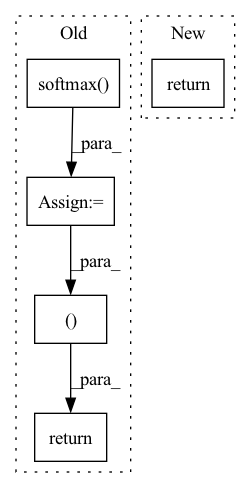

Pattern ID :662
Before Change
mask = rearrange(mask, "b n -> b () n ()")
k.masked_fill_(~mask, -torch.finfo(k.dtype).max)
q = q.softmax(dim = -1)
k = k.softmax(dim = -2)
q = q * self.scale
if exists(mask):
v.masked_fill_(~mask, 0.)
context = einsum("b h n d, b h n e -> b h d e", k, v)
out = einsum("b h d e, b h n d -> b h n e", context, q)
out = rearrange(out, "b h n d -> b n (h d)")
return self.to_out(out), 0
class EquivariantAttention(nn.Module):
def __init__(
self,After Change
def forward(self, x, queries, mask = None):
induced = self.attn1(queries, x, mask = mask)
out = self.attn2(x, induced)
return out, 0
class EquivariantAttention(nn.Module):
def __init__(In pattern: SUPERPATTERN
Frequency: 3
Non-data size: 5
Instances Fragment ID: 2296898
Project Name: lucidrains/en-transformer
Commit Name: 6bd1817d780502d24a2515e850c9cd1600f24642
Time: 2021-06-04
Author: lucidrains@gmail.com
File Name: en_transformer/en_transformer.py
M Class Name: GlobalLinearAttention
N Class Name: GlobalLinearAttention
M Method Name: forward(4)
N Method Name: forward(4)
M Parent Class: nn.Module
N Parent Class: nn.Module
M File Name: en_transformer/en_transformer.py
N File Name: en_transformer/en_transformer.py
M Start Line: 132
M End Line: 151
N Start Line: 160
N End Line: 162
Before Change
x = F.relu(self.fc1(x))
x = F.relu(self.fc2(x))
act1 = F.softmax(self.act1(x), dim=1)
act2 = F.softmax( self.act2(x), dim=1)
return act1, act2
def mini_batch(buffer):
batch = random.sample(buffer, batch_size)
obs, acts, rewards, next_obs, done = [], [], [], [], []After Change
x = F.relu(self.fc1(x))
x = F.relu(self.fc2(x))
acts = [F.softmax(self.acts[idx](x), dim=1) for idx in range(num_act)]
return acts
def mini_batch(buffer):
batch = random.sample(buffer, batch_size) Fragment ID: 2296903
Project Name: rl-max/deep-reinforcement-learning-pytorch
Commit Name: 8d887659e1f8e488123279511313b2690ded38a6
Time: 2021-04-07
Author: poiroth946@gmail.com
File Name: c51.py
M Class Name: QNet
N Class Name: QNet
M Method Name: forward(2)
N Method Name: forward(2)
M Parent Class: nn.Module
N Parent Class: nn.Module
M File Name: c51.py
N File Name: c51.py
M Start Line: 31
M End Line: 34
N Start Line: 32
N End Line: 33
Before Change
if self.training:
// Compute head probability distribution.
logits_arc = logits_arc.softmax(-1)
logits_label = logits_label.softmax( -1)
return logits_arc, logits_label
After Change
logits = logits.squeeze(-1)
if self.training:
return logits.softmax(-1)
else:
return logits
Fragment ID: 2296904
Project Name: explosion/spacy-experimental
Commit Name: b11c33d56db81f0be1a4e04fcda0042b9c500f37
Time: 2021-10-29
Author: me@danieldk.eu
File Name: biaffine_parser/pytorch_biaffine_model.py
M Class Name: BiaffineModel
N Class Name: BiaffineModel
M Method Name: forward(3)
N Method Name: forward(3)
M Parent Class: nn.Module
N Parent Class: nn.Module
M File Name: biaffine_parser/pytorch_biaffine_model.py
N File Name: biaffine_parser/pytorch_biaffine_model.py
M Start Line: 102
M End Line: 128
N Start Line: 95
N End Line: 117